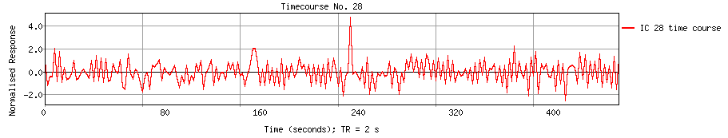
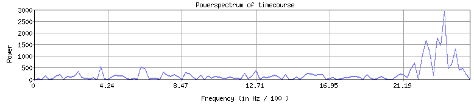

<
-
>
MELODIC Component 28
1.88 % of explained variance; 1.36 % of total variance
Temporal mode


This page produced automatically by
MELODIC
Version 3.15 - a part of
FSL - FMRIB Software Library
.